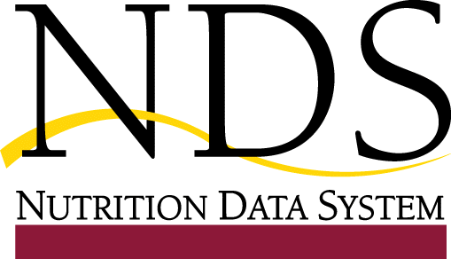

| service |
| home page |
|  |
| . USER'S GUIDE Choose Topic and Click 'Go' Join the BizTech Network Free. Rethinking Management for the New World of Uncertainty and Risk ". the first book on knowledge-driven organizations and knowledge workers that can survive and thrive in the new world of uncertainty and risk. On Adaptive Systems On Knowledge Ecology On Knowledge Work On Agile Enterprises Walking the Talk Free Newsletter Latest Books by the BRINT Institute Knowledge Management and Business Model Innovation by Dr. |
| . Government Resources for the events of September 11th. Federal Acquisition Management Information System (FAMIS) (An Enhanced Federal Procurement Data System) The Federal Procurement Data Center The Federal Procurement Data Center (FPDC), part of the U. General Services Administration, operates and maintains the Federal Procurement Data System (FPDS). The FPDS is the central repository of statistical information on Federal contracting. |